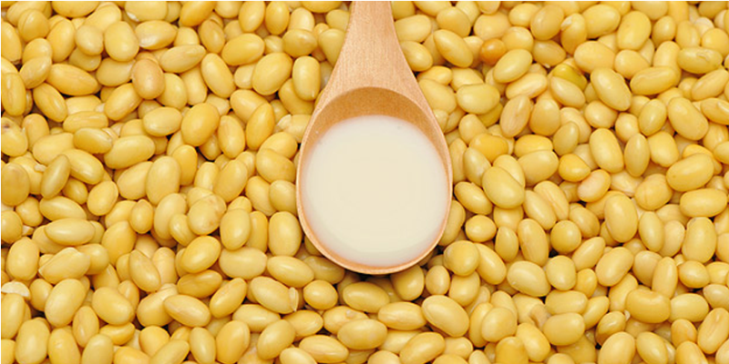

Protein forms the vital organizations of human bodies -- red cells, white cells, veins, and skin.
If people are lack of protein, it may cause a lot of problems.
People might become thinner, decline of immunity, anemia, indigestion, edema, etc....
Not only meat, some plants can also provide protein to our bodies.
Let's look at this table, which explains the Nutritive value of both meat and plants.
Average Amount of Protein in each 100g of Food
Nutrition of Meat (Chicken)
Nutrition of Plants (Soy)
19g
36.5g
As you can see, to absorb more protein, having soy-bean milk (a product made by soy)
may be a better way than eating meat (such as chicken).
